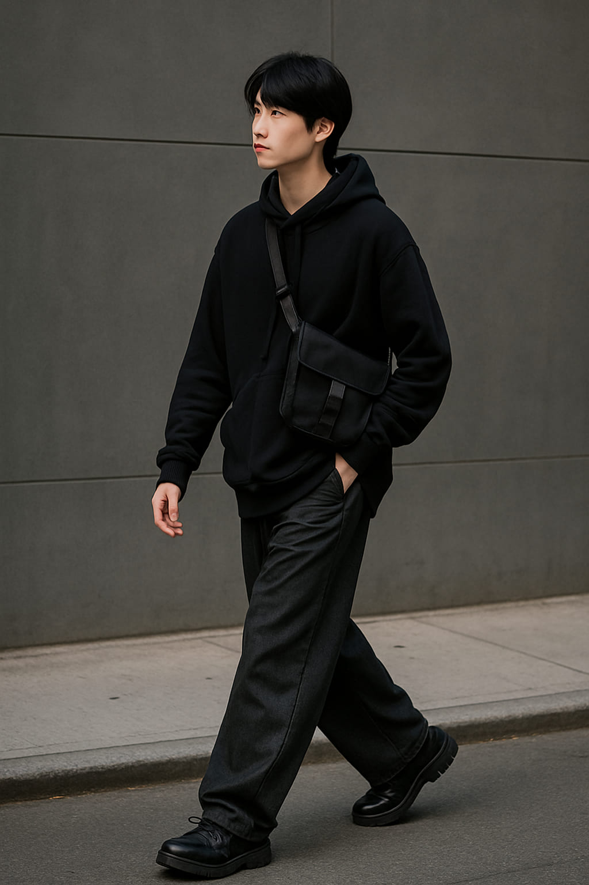
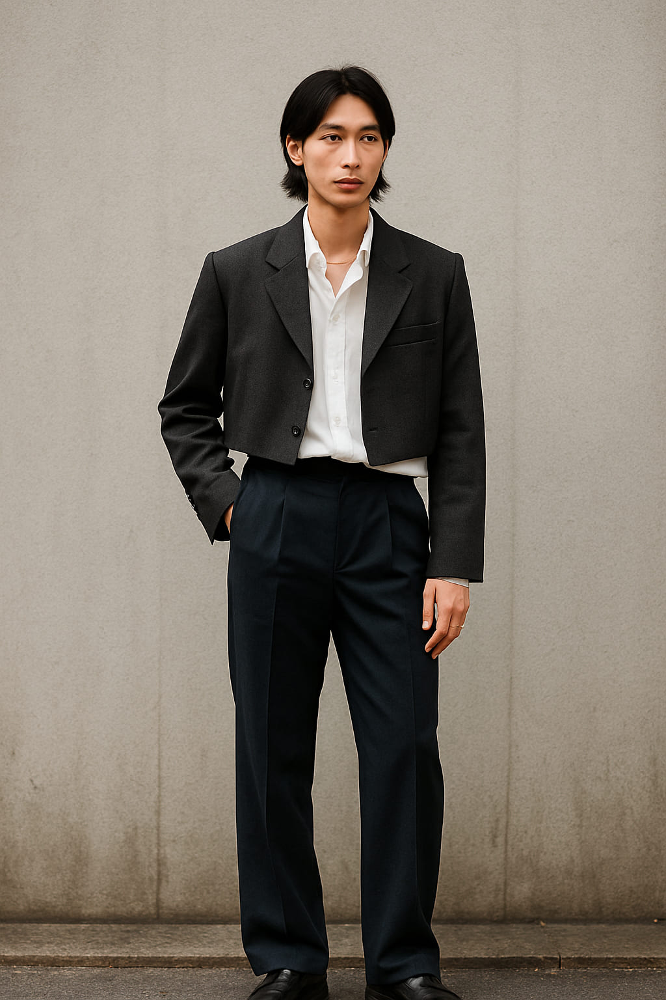

Tokyo Layering: The Art of Style in Motion
Nowhere does layering like Tokyo. It’s not just about adding warmth — it’s a statement of depth, individuality, and movement. In this lookbook, we explore the everyday magic of layering in Japanese street style: shapes, silhouettes, and that balance between chaos and control.
Look 1: Shadow Geometry
This look plays with proportion: a long-line hoodie structured over wide-leg trousers and a sloped crossbody bag. The palette stays in grayscale, but the movement of each piece creates a visual rhythm — architectural, yet soft.
Look 2: Contrast in Motion
Layering in Tokyo isn't only about weight — it’s about contrast. This outfit pairs a long pleated skirt worn over pants, with a fitted top and crisp outer layer. It’s a balance of soft and strong, still and fluid.
Look 3: Utilitarian Elegance
Function becomes form. A neutral-toned trench, loose blouse, and simple slacks are elevated by one key accessory: a tactical crossbody bag that anchors the look with purpose and structure. Streetwear, but make it clean.
“Tokyo layering isn’t about fashion—it’s about choreography.”
Look 4: Volume & Silence
Oversized silhouettes can still whisper. This look plays with sheer layers, low collars, and soft fabrics to create volume that floats, not overwhelms. There’s quiet elegance in asymmetry and movement.

Look 5: Structured Flow
Hard lines meet soft motion. A cropped blazer over an untucked shirt, layered necklaces, and cuffed trousers — this ensemble reflects the Tokyo mindset: calculated but unpretentious.
Words by Style Atlas